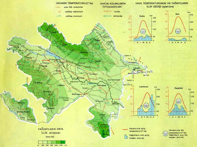

Азербайджанская Республика – государство в юго-восточной части Закавказья. Площадь – 86,6 тыс. кв. км.
Граничит на севере с Россией, на северо-западе с Грузией, на западе с Арменией, на юге с Ираном, на крайнем юго-западе с Турцией, на востоке омывается Каспийским морем.
Более половины территории Азербайджана занимают горы, относящиеся к системе Большого Кавказа на севере (хребты Большой Кавказский с вершиной Базардюзю, 4480 м,
и Боковой с вершиной Шахдаг, 4250 м) и Малого Кавказа на западе и юго-западе. Для высокогорий Большого Кавказа характерны ледники и бурные горные реки,
среднегорья сильно расчленены глубокими ущельями. С запада на восток горы Большого Кавказа сначала постепенно, а затем резко понижаются и сменяются системой низких кряжей.
Горы Малого Кавказа менее высокие, состоят из многочисленных хребтов и вулканического Карабахского нагорья с конусами потухших вулканов.
На крайнем юго-востоке находятся Ленкоранские горы, состоящие из трех параллельных хребтов. Главная вершина самого высокого Талышского хребта Кёмюркёй достигает 2477 м.
Горы Большого и Малого Кавказа разделяет обширная Кура-Араксинская низменность.
К северо-востоку от Большого Кавказа расположена Кусарская равнина. Северо-западная и северная часть Кура-Араксинской низменности представляет собой систему холмов,
низких кряжей и долин; в центре и на востоке расположены аллювиальные равнины, у морского побережья – низкая дельта р.
Куры. Низменные Апшеронский п-ов и Куринская коса глубоко вдаются в Каспийское море.
Азербайджан располагается в переходной зоне от умеренного климата к субтропическому, и небольшой кусочек на самом юге, в субтропиках. Но это вовсе не значит, что на большей части территории страны климат одинаков, как раз наоборот – из-за высокой поясности наблюдается невероятное разнообразие типов климата – в этой стране можно найти девять различных типов из двенадцати выделяемых по классификации Кёппена.
Благоприятные природно-географические условия позволили человеку поселиться здесь с древнейших времён. Таким образом, стадное общество первобытного человека охватывало огромный период каменного века, точнее — более 1,5 млн лет. Больше всего стоянок древних людей было найдено в Карабахе, Казахе и Нахичевани. В Карабахе ценные находки выявлены в пещерах Азых, Таглар и Зар. В Казахском районе в пещерах Дашсалахлы и Дамджылы, а также на стоянках Шишгузей, Кекилли обнаружены орудия труда и другие материальные остатки. Стоянки людей каменного века выявлены также в Талышской зоне.
28 апреля 1920 года было объявлено о создании на территории АДР - Азербайджанской Советской Социалистической Республики (Азербайджанской ССР). В декабре 1922 г Азербайджан, Грузия и Армения образовали Закавказскую Социалистическую Федеративную Советскую Республику.
Одна из самых известных достопримечательностей современного Азербайджана. Три башни, построенные в форме языков пламени, снабжены десятью тысячами жидкокристаллических панелей – после захода солнца небоскребы превращаются в гигантские световые панно, которые видно почти из любой точки центрального Баку. Форма Пламенных башен имеет явные отсылки как к древнему названию Азербайджана («Страна огней»), так и к государственному гербу, где эти огни изображены.
Ковер в Азербайджане считается таким же произведением искусства, как где-нибудь в Европе картина или скульптура. И неудивительно, что в Баку есть музей, посвященный этой национальной гордости – причем снаружи музей выглядит не менее интересно, чем внутри.
Габала, город с населением около 17 тысяч человек, в настоящее время превратился в один из самых крупных центров отдыха в Азербайджане. Город представляет собой цепочку активно развивающихся горнолыжных курортов и новых отелей, разбросанных по склонам живописных лесистых гор. Основные клиенты курортов и отелей – бакинцы, но в последние годы едет все больше гостей из Турции и России.
Талышские горы, не такие высокие как Кавказские, идеально подходят для несложных треков и походов «выходного дня». Если нет желания гулять по горам пешком, то можно полюбоваться их пейзажами и из окна автомобиля – трасса Ленкорань-Лерик проходит по их склонам.
В 1744 году в Шамахы появилась резиденция арабского халифа. С тех пор Джума мечеть является одной из самых древних в Закавказье. Ее уникальность заключается в том, что на территории Азербайджана при огромном количестве разнообразных мечетей аналогов этому объекту нет. Молельный зал делится здесь на три отдельных группы. Они, в свою очередь, соединяются каменными проемами.
| Бозартма из курицы |
|---|
| Долма азербайджанская |
|---|
| Кутабы (азербайджанские чебуреки) |
|---|
| Пахлава бакинская (рецепт с коррективами) |
|---|